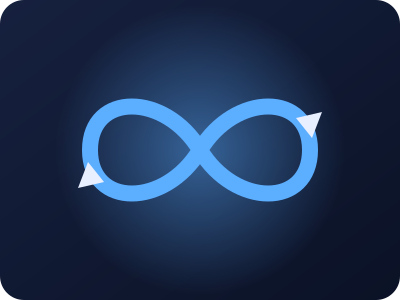

מהנדס/ת DevOps
תשתיות, ענן ותהליכי שחרור
Docker / Kubernetes
-
☀ בודקים את הדופק
המערכות ערות — ומה מצב התשתיות?
פותחים Dashboard ניטור, בודקים התראות לילה ומוודאים שכל השירותים זמינים.
- בדיקת Monitoring
- סקירת Alerts
- בדיקת גיבויים
- תכנון Deploy
-
◉ בונים אוטומציה
פחות פעולות ידניות, יותר אמינות
משפרים Pipeline, מעדכנים תשתית כקוד ומסייעים למפתחים להרים סביבות עבודה.
- CI/CD
- Docker Images
- Terraform
- ניהול סביבות
-
☾ משפרים יציבות
מכינים את המערכת לעומסים
בודקים משאבים, מנתחים Logs, משפרים Autoscaling ומטפלים בחוב תשתיתי.
- ניתוח ביצועים
- Kubernetes
- עדכון הרשאות
- Capacity Planning
-
✦ שחרור בטוח
הגרסה באוויר — והניטור ממשיך
מובילים פריסה מדורגת, בודקים מדדים ומכינים Rollback אם משהו לא מתנהג כצפוי.
- Blue/Green Deploy
- בדיקת Metrics
- Rollback Plan
- תיעוד תשתיות
דוגמאות קוד להמחשה (3 קבצים)
pipeline.ymlname: build-and-test
on: [push, pull_request]
jobs:
build:
runs-on: ubuntu-latest
steps:
- uses: actions/checkout@v4
- run: docker build -t app .
- run: npm testdeployment.yamlapiVersion: apps/v1
kind: Deployment
metadata:
name: web-app
spec:
replicas: 3
selector:
matchLabels:
app: web-appinfra.tfresource "aws_s3_bucket" "logs" {
bucket = "company-app-logs"
tags = {
Environment = "production"
ManagedBy = "terraform"
}
}